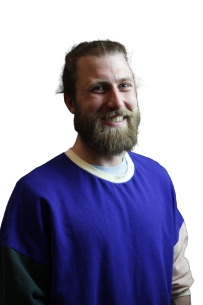

About Me
Operations & Project Management | Digital Systems (CRM, Web, Data) | Bilingual FR/EN | Arts, Culture, Creative Studios & Sports
I connect the people, systems, and projects that keep an organization moving. At En Piste, the national alliance for Canada's circus arts sector, that's building the digital systems behind a network of circus artists. Before that, it meant event logistics for 223 performances across 94 shows in five days at CINARS, and training staff for product launches at Apple's 200-person store.
I'm not built for one lane. I studied journalism, spent years in event production and logistics, and ended up owning the digital side along the way. What ties it together: I like being the person who understands both the technical and human sides of an organization well enough to translate between them. Give me a messy process, a vendor relationship that needs managing, or a system nobody else wants to touch, and I'll figure out how the pieces should actually connect.
At En Piste, I manage digital development projects, from securing grant funding to running the budget, delivery, and reporting. That includes an ongoing data standardization project that structures the data of our roughly 600 members to the DataScène sector standard, feeding platforms like Artsdata and Wikidata to make the artists, companies, shows, and circus acts easier to find online.
In 2025 I coordinated a full redevelopment of En Piste's website and member platform, from planning to public launch, with our staff and an outside development team.
I also run the organization's digital systems: the Airtable CRM, Microsoft 365, the dashboards and databases I design for staff, and internal AI tooling for SEO and archiving. I produced Le Chantier numérique, a two-day congress on digital tools for circus artists, and advise the team on which AI tools are worth adopting and where they fall short.
On my own time, I do web development and support for two independent arts clients, working in WordPress and Wix.
I work in French and English, and I'm drawn to organizations where creativity and operations have to work together: arts, culture, creative studios, sports. My work spans operations, project management, and digital systems. If you have a lot of moving parts that need pointing in the same direction, that's usually where I'm useful.